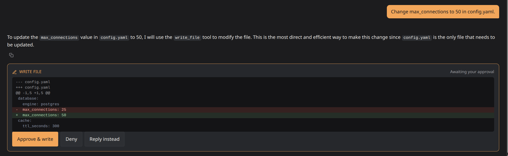
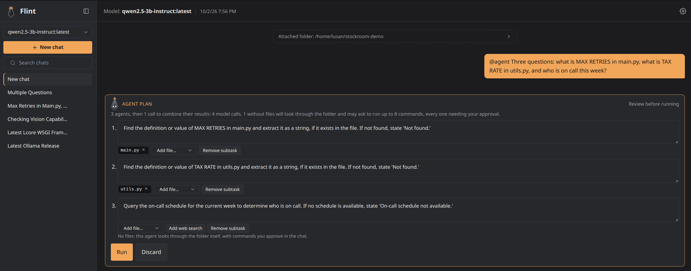
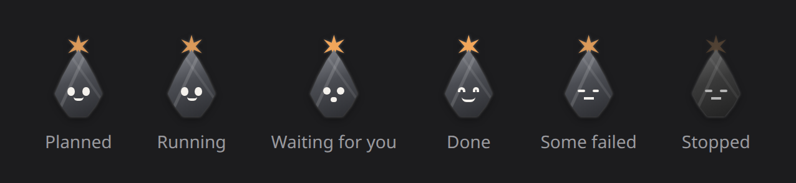
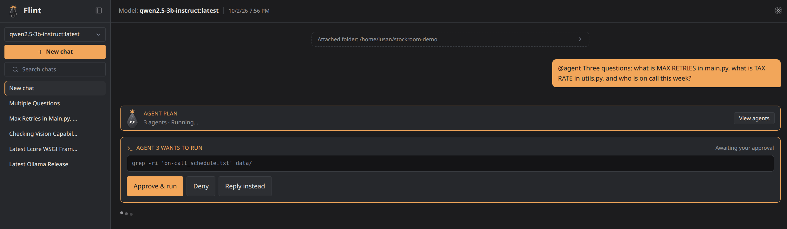
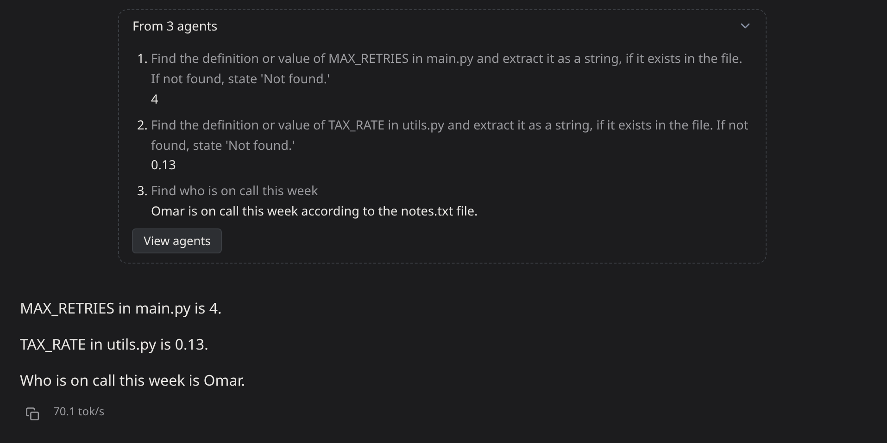
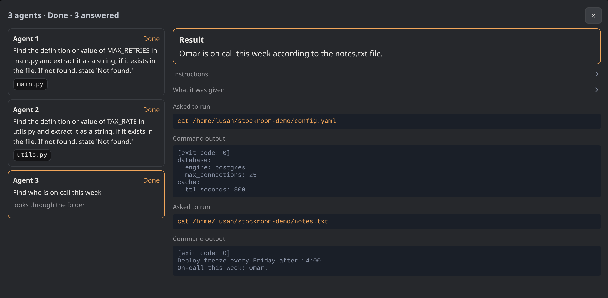

Features
Everything Flint does, grouped by area.
Accounts#
- Open signup: full name, email, and a password of at least 8 characters. Sessions last 30 days.
- Log in and log out. Logging out asks first, then ends the session on the server. It's at the bottom of the sidebar in both the chat and Settings.
- Private per account. Each account sees only its own conversations, attachments, commands and memories. Another account's items answer "not found".
- Password recovery without email. Set 2-5 security questions in Settings. To recover, enter your email, answer the questions, and choose a new password. Answers are compared case- and whitespace-insensitively. A reset signs out every session of that account.
- Edit your profile in Settings → Account: name and email. Changing the email asks for your current password, since it's how you log in.
- Change your password in Settings → Account, with your current password. Your other devices are logged out; this one stays in. If you've forgotten the current one, log out and use Forgot your password? (needs security questions).
- Delete your account in Settings. It asks for your password and, if
you've set security questions, their answers, then a typed
DELETEconfirmation. Every chat, attachment, memory and setting is deleted for good, and every session is signed out. - Rate limiting on login, signup, recovery and account deletion (see security.md).
Chat#
- Commands as you type. Typing
@at the start of a message lists@agent,@web,@memory,@memory saveand@compactwith what each does; arrow keys and Enter or Tab pick one, Escape hides the list. -
Cloud models. An Ollama cloud model (
ollama pull <name>:cloud) works like any other, under the same rules (every command waits for approval and passes the shield and precondition checks), but runs on ollama.com: the whole chat, attached folder files and command output included, leaves your machine. It's tagged "cloud" in the New chat picker, in Settings and next to the model name, and a line at the top of the chat says where it goes. If Ollama isn't signed in, the error says to runollama signin. The scaffolding (compaction, tool nudge, retry budget) is tuned for small local models and isn't measured on cloud ones. -
Streaming replies, rendered as Markdown (sanitized with DOMPurify): headings, lists, tables, quotes, links, task lists and strikethrough. Code blocks show their language and have their own Copy button, with no syntax highlighting. Diagram code such as Mermaid shows as a code block you can copy into any viewer.
- Math renders offline with Temml as native MathML:
\(…\)or$…$inline,\[…\]or$$…$$as a block. Dollar amounts like "$5 and $10" stay plain text,$inside code is left alone, and broken LaTeX shows an error instead of breaking the reply. - No remote content. Rendering a reply never fetches anything. A remote image becomes a link you can open on purpose, and raw HTML from the model can't load media, styles or SVG from the network.
- Copy any message.
- Thinking toggle (the light-bulb button). For models with the thinking capability, such as qwen3.5-4b, it switches between reasoning first and answering directly. The model's thinking is shown separately from its answer. The toggle is disabled for models without thinking.
- Stop generating. A stopped reply keeps what was already shown, so the history matches the screen. A tool call cut off mid-stream is dropped, so it can never be approved.
- Edit the last message. This resends it and discards everything
after it, including a pending command. Its attachments carry over. An
@agentmessage can't be edited: send a new one instead. - Generation speed (tokens per second) under each reply.
- Context meter. Next to the folder chip, after a thin divider: a row of thin bars, grey for the whole window and bright for how much of it the last request used, and the token count ("192 / 4.1k") to its right. Hover it for details. It turns the accent color above 80%. It updates after every response, including tool steps, and shows from the start of a chat (at 0). Once older messages have been condensed into a summary, it says how many ("192 / 4.1k · 12 condensed"), so a model losing an early detail isn't a mystery.
- Model loading notice. Shown while Ollama loads a model, instead of bare dots.
- Missing-model badge. If a chat's model has been removed from Ollama, the header says so and points you to Settings or a new chat.
- Last-activity time in the chat header.
- Scrolling tips under the message box: a slow marquee through
@web,@memory save,@memory <words>and@compact. It pauses on hover and shows one static tip if your system asks for reduced motion. - Enter sends, and Shift+Enter adds a new line.
Conversations#
- New chat with a model picker. It defaults to the model you used
most recently. Until the chat has its first message (or
@agentplan), the model name in the header is a dropdown to switch it; attaching a folder doesn't count. After that the model is fixed, since the history, summaries and token calibration all came from it. - Automatic titles. The first message sets a placeholder right away. After the first reply (not after a failed one, which keeps the placeholder), the model writes a 2-6 word title, unless you've already renamed the chat.
- Rename and delete. Deleting asks Yes / No first, and also removes the chat's attachment files.
- Search across chats from the sidebar. It matches titles and your and the model's messages as you type, and shows a snippet of the match.
- Sidebar. It collapses to a narrow rail and remembers that choice. The rail has New chat and Search buttons; Search opens the sidebar with the cursor in the search box. On phones the sidebar becomes a slide-over menu. Hovering a chat shows its full title. Clicking the chat you're already in does nothing, rather than reloading it.
Attachments#
- Files and images from the attach button or by pasting. Up to 4 files per message, 8 MB each. Every file is validated before any part of the message is saved.
- Images (PNG, JPEG, GIF, WebP, BMP) go to vision models. Only the most recent message with images keeps sending them. Older ones become a note telling the model to ask for a re-send, because one large image can use half a small window.
- Other files are stored for you to see and download. The model only gets a note that a file was attached, and the UI warns that the model can't see it.
Folder attach and the shell tool#
- Attach a folder, typed or picked with the folder browser (it lists subfolder names only, starting at the server user's home). Flint reads the files directly inside it (not subfolders), skips binaries and files over 64 KB, and includes up to 12 KB of text as the chat's standing context. Files past that are listed as not included.
- Change the folder with the Change link on the folder chip. The new folder's contents replace the old ones in the same standing-context slot, so the model sees only the new folder. It's disabled while a command is waiting for approval, since that command was proposed for the old folder.
- Shell commands with approval. With a folder attached, the model can propose shell commands through Ollama's native tool calling. Every command waits for you to approve or deny it. Nothing runs automatically. The command text is shown exactly as proposed, and it runs with the folder as its working directory, which is a convenience, not a sandbox.
- Without a folder, the model can't run commands. Asked to run or check something, it gives you the command to run yourself and says you can attach a folder if you want it to run commands, instead of inventing output.
- Reply instead. Besides Approve and Deny, a waiting command has
Reply instead: it opens the message box so you can tell the model
what to do ("we're on Plasma 6, not 5", or "
@webit first"). Sending denies the command without letting the model carry on by itself, then sends your message as a normal one, so@weband@memorywork in it. A denied card shows only "Denied". - Safety shield. Catastrophic patterns (
rm -rf /,sudo, piping a download into a shell, and so on) are blocked before you ever see them. - Precondition check. A command whose program or read target doesn't exist goes back to the model without asking you.
- Reading files. The model reads a file in the attached folder with
read_file(numbered lines, 400 at a time) without asking you when it's a local model: nothing runs, and a path outside the folder, through.., an absolute path or a symlink, is refused, as are SSH keys and other secrets the shield blocks. With a cloud model, each read waits for your approval, because the file goes to its host. Each read shows as a "Read data/prices.csv · lines 1-4 of 4" line you can open. - Editing files, as a diff.
edit_filereplaces an exact piece of a file andwrite_filecreates or replaces one. Either shows a red/green diff with Approve & write, Deny and Reply instead; nothing is written until you approve. An edit whose text isn't in the file, or matches more than once, goes back to the model with the file's real lines, without asking you, and when one line holds every part of what it typed, it's pointed at that line. If the file changes after the edit was proposed, approving refuses it rather than overwrite your change (E30).
- Edit before writing. When the model gets an edit mostly right, Edit on the diff card opens its new lines in a text box. Fix what's wrong and Write my version: your lines are written in place of the model's, the card shows the diff that was actually written, and the model is told exactly which lines you wrote, so its picture of the file stays right. Show diff goes back to the proposal unchanged.
- Clear results. Every result states success or failure with the exit code, and the output is shown in the chat.
- Bounded retries. After 3 steps that asked for your approval since your last message, or 8 steps in all (reads and refused proposals included), the model has to answer in text.
- File names checked. A file the model names in its answer that isn't in the folder is listed under the reply ("Mentioned but not in the folder"). It may have been made up, or not created yet. Checked again on each page load, so creating the file clears it (E27). The next request also tells the model, so it checks before building on a name it made up (E28).
- Live folder listing. Each turn, the folder's real file paths, subfolders included (up to about 600 tokens, shallowest first), go next to the model's reply point, so it names files that exist instead of guessing (E29).
Why edits are one file at a time#
Why isn't there one review card for a change across several files, or
hunk-by-hunk accept like git add -p?
Because with a 3-4B local model the review isn't the bottleneck,
getting each edit right is. In testing, 6 of 15 single-file edits came out
exactly right (E30); a change across several files needs every
one of them right, so it succeeds less often, and a nicer card doesn't
change that. Holding edits back to review together also means the model
plans its second edit against files that haven't changed yet, which takes
a virtual view of the folder for the rest of the turn: real weight for an
unproven gain. Hunk-by-hunk accept doesn't apply either: edit_file
replaces one exact piece of text, so its diff is a single hunk, and
accepting part of a rewrite can leave code that doesn't run, with the
model unsure what's on disk.
What exists instead is Edit on the diff card: fix the part the model got wrong yourself, and the model is told exactly what was written. Multi-file review will be considered for cloud models and agents, which are capable enough to make coordinated changes worth reviewing as one; it would be measured first with benchmark tasks that change two files at once.
Web search (@web)#
- Start a message with
@web <query>to search the web through the Brave Search API, using your own key from Settings. Once saved, the key is never shown again: Settings shows its last four characters and lets you replace or remove it. Flint runs the search, not the model, and it sends only the query text. - The top 10 results are re-ranked by similarity to the query with
Ollama's
nomic-embed-text, and the best 3 go into the chat. That model is optional: without it@webuses Brave's own top 3. It only loads while a search runs (Flint asks Ollama to unload it right after, not after its default 5 minutes), and Settings offers a Pull button when it's missing. - Each result carries its publish date from Brave, when it has one. When all the kept results have one, the model sees the dates with a note that snippets can be out of date, to trust the newest, and to answer "what's the latest version" questions with the source's date ("v1.2, according to a page from 2026-08-28; a newer one may exist") rather than as today's fact. With some or all undated, it sees none: it invented a date for the gap, or trusted the one dated result (E21), and the card then shows no dates either. Search snippets are short, so a fresh page whose snippet doesn't state the answer can't supply it.
- While it runs, the chat shows Searching the web for "…". Afterwards a collapsed one-line card above the answer (Searched the web for "…" · 3 sources) opens to list the results it was based on, as links with their site names and dates, so you can check the answer yourself. The card is also there after a reload. A small model can confidently state wrong facts from memory, and the sources show where the answer really came from.
- With no key configured, the flag is stripped from the saved message and you're shown a notice. The request still goes through.
- Search history in Settings → Connection: every search still in your chats, newest first, with the exact query sent, when, a link to its chat, and how many this month (useful against your Brave quota). It's read from the saved results, so deleting a chat removes its searches, and a search that failed isn't listed.
Memory (@memory)#
Facts you choose to keep across chats. Like @web, memory is only used
when you ask for it. The model never decides on its own to save or look
things up.
@memory save <text>saves that text exactly as written (up to 4000 characters per memory).@memory saveon its own asks the model to draft the lasting facts from this chat. The draft appears as a card you can edit, then Save memory or Discard. Nothing is saved until you approve it, because a small model's draft can be wrong, and a wrong memory would come back in every later chat.@memory <words>searches your memories (any word can match) and adds the best matches to this chat, within an eighth of the model's window. If nothing matches, you're told. After a reload the recall shows as a collapsed "Recalled memories for …" card after the message that asked, not as the instructions sent to the model.- Folder memories. A memory saved in a chat with a folder attached belongs to that folder. It loads automatically in every chat that attaches the same folder, newest first, within an eighth of the window.
- Manage memories in Settings: read, edit or delete them. A memory
saved from a chat links back to it (
From: <chat title>). Memories saved in Settings, before this existed, or from a since-deleted chat show no link. - A "Saved to memory" card marks where a memory was saved from a chat, and expands to show what was saved. It's there live and after a reload (placed by the time it was saved), shows the memory's current text if you edit it in Settings, and goes away if you delete it. It's never sent to the model.
- Memory commands aren't added to the chat history. An edit can't turn a message into a memory command.
Agents (@agent)#
@agent <task> splits a task into independent subtasks, each run by a
separate agent with its own clean context window, then combines their
results. It's for questions spanning several files, where one crowded
chat history makes a small model lose track. Like @web and @memory,
it only happens when you ask for it, and Flint's own code, not the model,
decides what runs.

- Planning.
@agentworks on the attached folder; without one, the message is answered as a normal chat, with a note. One model call, constrained to a JSON schema, lists the subtasks and the files each one needs from the folder (its direct files, not subfolders). The planner sees file names and sizes, not contents, and never proposes a web search, even with a Brave key: offered one, a small model searched the web for facts that were in the folder. A web search is only ever something you add on the plan card. - Agents that look for themselves. With a model that supports tool
calls, an agent that was given no files (and no web search) proposes
shell commands (
ls,grep,cat, ...) to look through the folder. It is told to search file contents (grep -rni, one short word) rather than guess file names, and a grep that matches nothing says so. An agent given files works from those only: offered commands too, qwen2.5-3b agents ran failing greps instead of reading the file in front of them. Each command appears in the main chat as "Agent 2 wants to run" with the literal command, and runs only after you approve it, the same flow as the chat's own commands, with the same safety shield and precondition checks. An agent stops asking and answers with what it has when its window is nearly full, after 5 failed or denied commands in a row (a command that works, or a Reply instead, starts the count over), or after 8 commands (Commands per agent in Settings). Reply instead on an agent's card sends it what you type in place of running the command. So picking files is optional: pick one and the agent reads it; leave a subtask empty and its agent searches. A model without tool support (phi3, for one) only gets what the plan gives it, so each of its subtasks needs a file or a web search. - Checked in code, not trusted. A file that isn't directly in the
folder is dropped (so
../x,/etc/passwdor a made-up name can't be given), a file named in a subtask's text is added to its inputs, and a web search you add is dropped without a Brave key or when the subtask has files (a local fact can't be on the web, and searching for it would only send it to Brave). A subtask left with no input is dropped unless its agent can look through the folder itself. Fewer than two subtasks means the task doesn't split, and it's answered as a normal chat, with a line saying so. - The plan card. Each subtask shows its instruction, its files and web search, and a note when a file is too big for an agent's window and will be cut (start and end kept). Edit the instructions, add or remove files, add or remove a web search, remove subtasks, then Run or Discard. Nothing is searched unless it's on the card when you press Run. The card shows how many model calls the run takes (one per agent plus one to combine; a range when agents may look through the folder), and what a subtask without files will do. An edited plan is checked again the same way before it runs. The card stays after a reload.
- Running. After Run the card folds to one line, and an Agents label appears after the context meter, past a thin divider like the meter's own ("Agents 1/3 · 1 queued · 1 waiting" while it runs, highlighted when an agent is waiting for your approval). The label, or View agents on the card, opens a large window listing each agent with its task, inputs and status; select one to see its result and everything it did (its instructions, what it was given, the commands it asked for and their output), refreshed while it works. At most "max agents" run at once (Settings → Connection, 2 by default locally): a plan can have more subtasks than that, and the rest are shown as queued until a slot frees. Stop ends every agent, and any command still waiting is cancelled, never run.
- The flint on the card. A small flint stone on the plan card shows
how the run is going at a glance: it bobs while the agents work, hops
with wide eyes when one is waiting for your approval, smiles when the
run is done, and goes grey when it was stopped. It's plain CSS, and it
holds still if your system asks for reduced motion.

- Results. Each agent ends with a fixed JSON result: its answer (at most 150 words) and whether what it read actually contained it. An agent that breaks the format, runs out of its 5 minutes of model time (time spent waiting for your approval doesn't count), or hits an error is shown as failed with the reason, never silently dropped. An agent that was given nothing and ran no command that worked has its answer replaced with "nothing to answer from": whatever it wrote, it can't have read it anywhere.
- The answer, in the chat. When the agents are done, one more call to the chat's model writes the answer from their results, and it streams into the chat like any reply, after a collapsed "From 3 agents" block listing what each agent found (with View agents to open them). The model is told to say plainly when a part is missing or an agent failed. Your task, the agents' short results and the answer become part of the chat's history, so later messages can build on them; the agents' transcripts never do. If no agent produced a result there's nothing to combine, a line says so, and nothing is added to the history. Stop during the answer keeps what was already shown, like any reply.
@agentisn't added to the chat history while it's only a plan, and an edit can't turn a message into one.



Long conversations#
A chat never runs out of room, and you never have to compact it yourself, though you can:
- Older turns are summarized in the background once they add up to a quarter of the window. Your own messages are kept word for word inside the summaries.
- Until a summary is ready, the oldest messages are left out of that request, and the model is told how many. Very large command output is cut down so every request fits. See context-management.md.
Compacting by hand (@compact)#
Send @compact as a message to condense the chat right away, instead of
waiting for older messages to fill a quarter of the window.
- What it does: summarizes everything eligible, oldest first, and merges summaries up a level when one level gets too full, the same way the automatic pass does.
- What it shows: each step as it happens, such as "condensed 3 messages into a summary" or "merged 3 older summaries into one", and then a closing line.
- What always stays word for word: your first message, the folder context, the latest tool call and its result, your latest message and the last 6 messages. Your own words inside the condensed part are kept word for word in the summary.
- Nothing to do: if everything older is already summarized, it says so and changes nothing.
- Already running: if the automatic pass is working on the same chat, it says so. Try again a moment later.
- Limits: up to 12 steps per command. A very long chat that was never
compacted may need
@compacttwice. - Not part of the chat: the command and its report aren't saved to
the chat history, and an edit can't turn a message into
@compact. - Nothing is deleted. The original messages stay in the database; the summary only replaces them in what the model is sent.
Settings#
Laid out like the chat page: a sidebar of sections on the left and one
section at a time on the right. On phones the sections become a row of
tabs. The open section is in the URL (/settings#models), so a reload or
a shared link opens the same one.
- Connection: your own Ollama URL, falling back to the server default,
the context window for local and for cloud models, separately (Auto,
or a number of tokens: raise the local one if your GPU has room, the
cloud one if your ollama.com usage allows; common sizes such as 32k =
32768 are listed and offered in the box; never above what the model
supports), how many
@agentagents run at once for local and for cloud models (Auto is 2 and 10; any number from 1 to 64, for a bigger GPU or a cloud plan that allows more; locally they only run together when Ollama'sOLLAMA_NUM_PARALLELallows it, otherwise Ollama queues them), how many commands one agent may ask you to approve (Auto is 8, one number for both, since it guards your attention rather than the model), and the Brave Search API key for@web. - Models: which models the new-chat picker shows, which are loaded, details for each (family, parameters, quantization, context length, capabilities), pulling new ones with a progress bar, and deleting them (type DELETE to confirm). Load puts a model in memory ahead of time and unloads whatever else is running first, so it gets the memory to itself; Unload frees a running one.
- Memories: every saved memory, with where it applies (its folder, or "Any chat") and the chat it was saved from, as a link. Edit or delete each one; deleting asks you to type DELETE.
- Account: your name and email, a password change, security questions for password recovery, and deleting the account. A new email or password needs your current password.
Running it#
- When Ollama isn't reachable, Flint says so plainly, once per page: where it looked and how to start Ollama or change the address, not Go's raw connection error.
- One static binary with SQLite, no build step, no CDN. The frontend libraries ship with it.
- A published Docker image (
ghcr.io/lusan-sapkota/flint) and a Compose file that runs Flint in a container using the Ollama already on your machine. See deployment.md. /healthzchecks the database and Ollama.